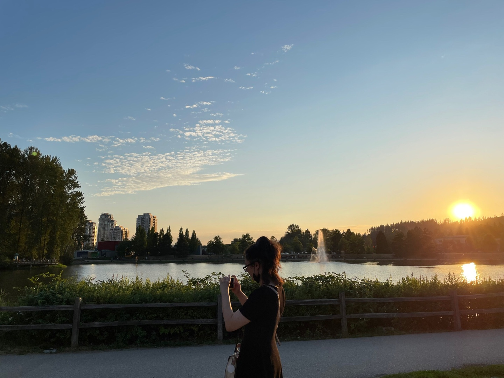

Harry thought, and no sooner had he reached the part about number twelve, Grimmauld Place, than a battered door emerged out of nowhere between numbers eleven and thirteen, followed swiftly by dirty walls and grimy windows. It was as though an extra house had inflated, pushing those on either side out of its way. Harry gaped at it. The stereo in number eleven thudded on. Apparently the Muggles inside hadn’t even felt anything.

I am a passionate l
Faced with the challenges posed by the pandemic, I decided to delve into a new academic discipline to expand both my knowledge and perspective. This has led me to my currently journey of pursuing a second Bachelor's degree in Computer Science at SFU.